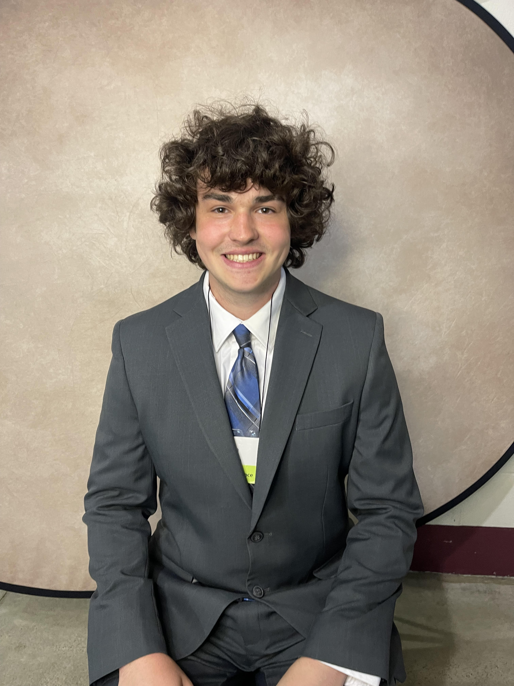

I'm a 4th-year Computer Science student with a minor in Management, driven by a passion for programming and problem-solving. I love creating innovative solutions through code and am constantly expanding my skills in both technical and leadership areas. I'm currently seeking internship opportunities to apply my knowledge and contribute to exciting projects in the tech industry. Let's build something amazing together!
On this website, you'll find a showcase of some of the projects I've been actively involved in throughout my academic journey. Each project reflects my passion for programming and my dedication to solving problems. I've also included links to my GitHub, where you can explore my code and see the progression of my skills, as well as my LinkedIn profile for a more comprehensive view of my professional background and interests. Feel free to reach out if you'd like to connect or learn more about my work!